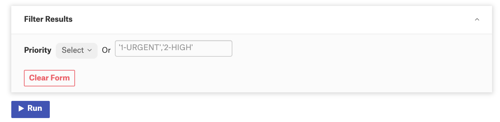
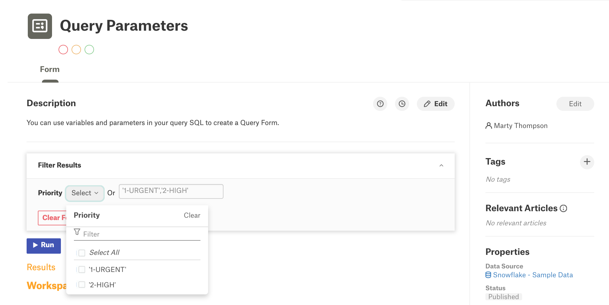
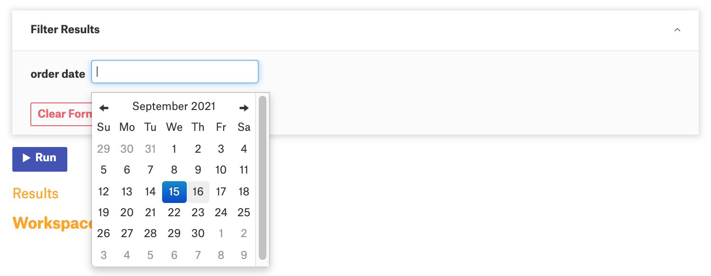

Query Forms and Parameters¶
Alation Cloud Service Applies to Alation Cloud Service instances of Alation
Customer Managed Applies to customer-managed instances of Alation
Query writers can add parameters to their queries to turn them into runnable forms. Other users can enter the values they want into the form and run the query without changing the SQL. See Query Forms for an overview of query forms. Continue reading in this topic for details on adding parameters to your query.
The basic parameter syntax is:
${variable | eg: example value | default: default_value | help: help text | type: type}
For example, if an original query reads:
SELECT * FROM SNOWFLAKE_SAMPLE_DATA.TPCH_SF001.ORDERS
WHERE o_orderdate == '2021-01-01';
The corresponding query form may look like:
SELECT * FROM SNOWFLAKE_SAMPLE_DATA.TPCH_SF001.ORDERS
WHERE o_orderdate = ${order date | eg: 2021-01-01 | type: date | default: 2021-01-01 | help: enter order date in YYYY-MM-DD format};
In this example, order date is a variable which will be supplied by users running the query form.
Variable¶
Variables define what kind of values can be changed in the query filter. A variable can be changed every time a query is rerun without rewriting the SQL code of the query.
For example, in the query given below, the expression ${order date} is the variable that can be changed by users when they run the query in Compose or when they run the corresponding query form in the Catalog:
SELECT * FROM SNOWFLAKE_SAMPLE_DATA.TPCH_SF001.ORDERS
WHERE o_orderdate <= ${order date};
Important
To define a variable, wrap it in ${}, for example: ${order date}
The query form that corresponds to this query, will include the order date filter:
The filter on this query form is an input field for the variable defined in the query (order date). The name of the filter field that users see when working with the query form is the variable defined in the query. You can use the actual column name as the variable or make it descriptive.
Note
To use a Hive variable, use a backslash to escape the variable reference, for example:
SET x=777; SELECT ${\hivevar:x}
The backslash character tells Compose that this is not a query form variable. The backslash will be stripped from the query before it’s sent to Hive for execution.
The variable can be further defined using a number of parameters:
Query Parameters¶
Parameters are helpful in providing a prompt of what kind of value should be filled in the input field for a variable, for example:
SELECT * FROM SNOWFLAKE_SAMPLE_DATA.TPCH_SF001.ORDERS
WHERE o_orderpriority IN (${Priority | eg: '1-URGENT', '2-HIGH' | type: raw});
The Query Form that corresponds to this query will look as follows:
{kind=link}
Important
The variable and the parameters should be separated with the pipe symbol: |
eg¶
The eg parameter can be used for defining example values to be displayed in the filter field on the query form. The value(s) provided for the eg parameter will be displayed in light gray on the field itself. The alternative syntax for eg is e.g..
Syntax¶
A single value:
eg: exampleValue e.g.: exampleValue
Multiple values:
eg: 'exampleValue1', 'exampleValue2' e.g.: 'exampleValue1', 'exampleValue2'
SQL Examples¶
SELECT * FROM SNOWFLAKE_SAMPLE_DATA.TPCH_SF001.ORDERS
WHERE o_orderdate <= ${order date | eg: 2021-09-12};
{kind=link}
SELECT * FROM SNOWFLAKE_SAMPLE_DATA.TPCH_SF001.ORDERS
WHERE o_orderpriority IN (${Priority | eg: '1-URGENT', '2-HIGH'});
{kind=link}
Multiple example values should be placed into single quotes. Note that when more than one example values are specified, the query form filter displays a multi-select dropdown list alongside with the manual input field:
help¶
The help parameter is useful for displaying a prompt for the query form filter in the Alation UI. If the help parameter is present for a variable, then an Info icon will be displayed next to the input field. On hover-over on this icon, users will see the text of the prompt.
Syntax¶
help: help text
SQL Example¶
SELECT * FROM SNOWFLAKE_SAMPLE_DATA.TPCH_SF001.ORDERS
WHERE o_orderdate <= ${order date | help: Enter a value for "order date"};
{kind=link}
type¶
The type parameter can be used for defining the data type of the variable. type accepts the following values:
string (str)
integer (int)
date
raw
Use type to specify the type of the variable for improved parsing, although you can leave it out.
type: raw tells Alation to take the variable input as is.
Syntax¶
type: typeValue
SQL Example¶
SELECT * FROM SNOWFLAKE_SAMPLE_DATA.TPCH_SF001.ORDERS
WHERE o_orderdate <= ${order date | type: date};
When the type is defined to be date, it will change the input field to be a date picker:
{kind=link}
The other types will result in a manual input field.
Note
When the type parameter is not present, Alation uses the type raw.
default¶
The default parameter can be used for declaring a default value for the input field of the variable. This value will prepopulate the filter on the query form. It can be used in place of the eg parameter. If both are present, the default value will take precedence.
Syntax¶
default: defaultValue
SQL Example¶
SELECT * FROM SNOWFLAKE_SAMPLE_DATA.TPCH_SF001.ORDERS
WHERE o_orderpriority IN (${Priority | default: 1-URGENT});
Query Parameter Examples¶
Find more examples of parameterized queries in the table below:
single value |
SELECT * from order_history
WHERE customer_id = ${customer_id};
|
single value with like |
SELECT * from order_history
WHERE col LIKE '${string}';
|
passing multiple values |
SELECT * from order_history
WHERE customer_id in (${customer_id | type: raw});
|
dates |
SELECT top 10 * from order_history
WHERE my_date = ${my_date | type: date};
|
dates multiple values |
SELECT top 10 * from order_history
WHERE my_date BETWEEN (${start_date | type: date}) and (${end_date | type: date});
|
string values |
SELECT * from order_history
WHERE customer = ${customer};
|
string multiple values |
SELECT * from order_history
WHERE customer IN ${customer | type: raw};
|